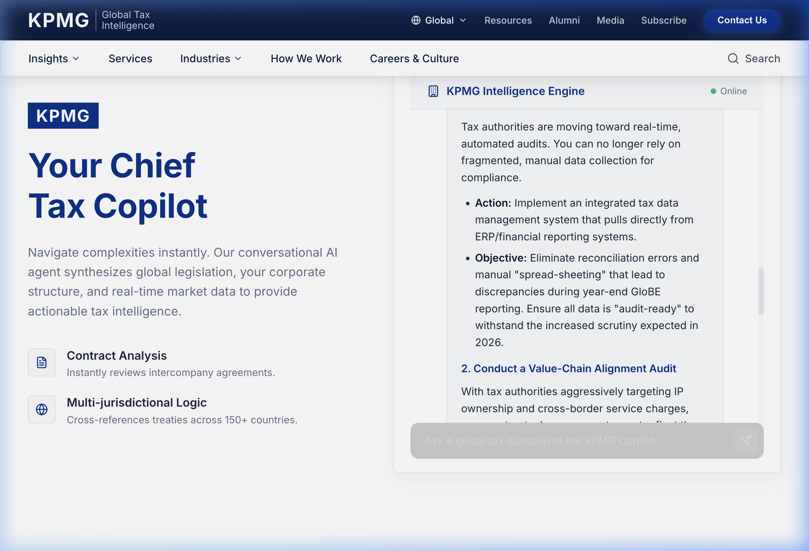
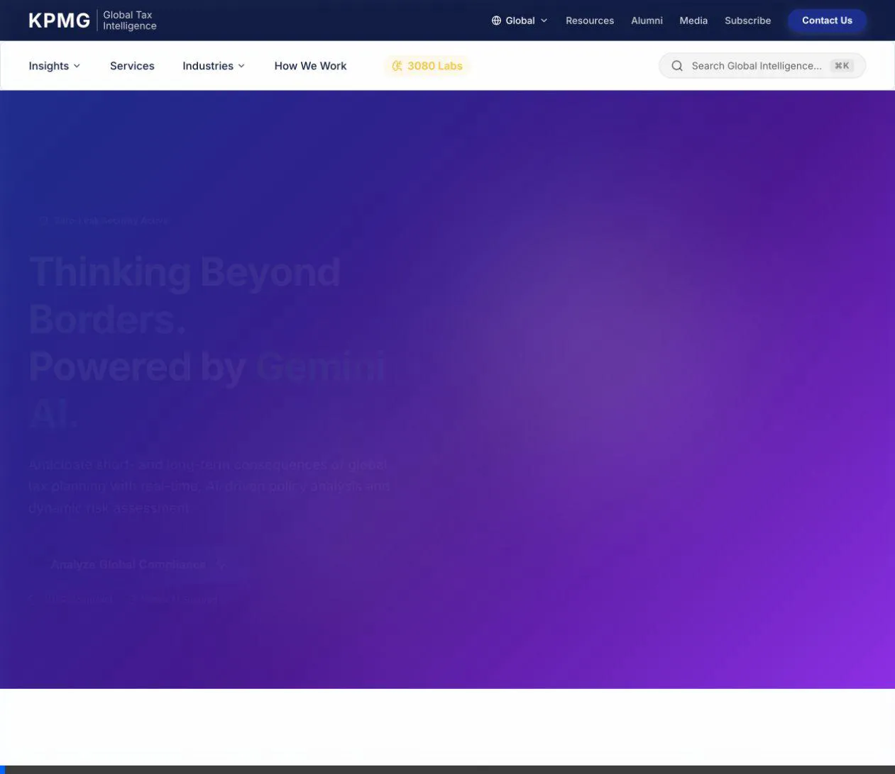

Strategic Tax Dashboard
The centralized control center integrates real-world regulatory impacts into actionable metrics. A sleek, high-end dashboard mimics visual responsive layout tools making analytical synthesis highly interpretable. It infuses real-time updates seamlessly on cross-border exposure thresholds.

Figure 1: Corporate dark-mode dashboard showcasing Live Strategy metrics panel nodes.
Chief Tax Gemini
The **Chief Tax Copilot** acts as an elite advisor specialized navigating corporate restructuring structures, using multi-modal lookup loops grounded in **Google Search Grounding**. This ensures replies remain accurate referencing live dynamic changes like Pillar Two deployment dates.
Search Grounding
Anchor-backed validation verifies correct references against live legislative bodies preventing hallucinations.
Layout Aware
Recognizes structured reporting formats parsing correctly on multi-turn loops.
Persona-Driven
Formulated keeping rigid enterprise guidelines giving CFO-facing tone.
Vertex AI Search Synthesis
Utilizing powerful multi-tiered layouts layout systems, the search synthesis module evaluates corpora datasets streaming modular previews representing critical reference targets without manual context evaluation.

Figure 2: Layout search summary outputs supporting background dynamic parsing previews.
Interaction Walkthrough
Watch the interactive dashboard, streaming execution setup, and responsive node controls in traversal sequence using multi-turn loops:

Figure 3: Scroll animation showing full landing dashboard tree and floating agent interactions.